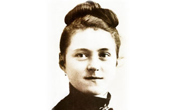

<!DOCTYPE php>
 <php lang="en">
	 <head>
		 <meta charset="utf-8" />
		 <meta name="viewport" content="width=device-width, initial-scale=1.0" />
		 <meta name="description" content="உலகின் முதல், புனித தெரேசா ஆலயம் - கண்டன்விளை (Estd.1923)" "="" />
		 <meta name="author" content="webThemez.com" />
		 <title>STCK : புனித தெரேசா </title>
		 <link rel="favicon" href="../assets/images/favicon.png" />
		 <link rel="stylesheet" media="screen" href="../../fonts.googleapis.com/css_c5f925f2.css" />
		 <link rel="stylesheet" href="bootstrap.min.css" />
		 <link rel="stylesheet" href="../assets/css/font-awesome.min.css" />
		 <link rel="stylesheet" href="../assets/css/bootstrap-theme.css" media="screen" />
		 <link rel="stylesheet" href="style.css" />
	 </head>
	 <body>
		 <div class="navbar navbar-inverse">
			 <div class="container">
				 <div class="navbar-header">
					 <button type="button" class="navbar-toggle" data-toggle="collapse" data-target=".navbar-collapse"><span class="icon-bar"></span><span class="icon-bar"></span><span class="icon-bar"></span></button>
					 <a class="navbar-brand" href="index.php.html"></a>
				 </div>
				 <!DOCTYPE php>
	 <script src="../../ajax.googleapis.com/ajax/libs/jquery/1.10.2/jquery.min.js"></script>
	 <script>
		var $j = jQuery.noConflict();
		$j(document).ready(function(){
			var pageName = location.href.split("/").slice(-1);
			if (pageName == "" || pageName == "index.php.html")
			{
				$('#homePage').addClass('active');
			}
			else if (pageName == "ancient-history.php.html" || pageName =="our-church.php.html" || pageName =="about-therese.php.html" || pageName =="sttherese-churches-in-india.php.html" || pageName =="rosary-hill.php.html")
			{
				$('#about').addClass('active');
			}
			else if (pageName == "parish-priests.php.html" || pageName == "sons-of-soil-priests.php.html" || pageName == "sons-of-soil-nuns.php.html")
			{
				$('#priestsAndNuns').addClass('active');
			}
			else if (pageName == "associations.php.html")
			{
				$('#piousAssociation').addClass('active');
			}
			else if (pageName == "documentary-video.php.html" || pageName =="church-altar-photos.php.html" || pageName =="festival-videos.php.html" || pageName =="festival-photos.php.html" || pageName =="car-photos.php.html" || pageName =="flagstaff-photos.php.html" || pageName =="church-photos.php.html" || pageName =="steeple-photos.php.html" || pageName =="other-photos.php.html" || pageName =="rosaryhill-photos.php.html" || pageName =="topview-photos.php.html")
			{
				$('#galleryPage').addClass('active');
			}
			else if (pageName == "parish-council.php.html")
			{
				$('#parishCouncil').addClass('active');
			}
			else if (pageName == "contact.php.html")
			{
				$('#contactPage').addClass('active');
			}
		});
	</script>
	 <div class="navbar-collapse collapse">			
		 <ul class="nav navbar-nav pull-right mainNav">
			 <li id="homePage"><a href="index.php.html">முகப்பு </a></li>
			 <li id="about" class="dropdown"><a href="#" class="dropdown-toggle" data-toggle="dropdown">வரலாறு <b class="caret"></b></a>
				 <ul class="dropdown-menu">
					 <li><a href="ancient-history.php.html">கண்டன்விளை பங்கு </a></li>
					 <li><a href="our-church.php.html">எமது ஆலய வரலாறு </a></li>
					 <li><a href="about-therese.php.html">புனித தெரேசா வரலாறு </a></li>
					 <li><a href="sttherese-churches-in-india.php.html">இந்தியாவில் புனித தெரேசா ஆலயங்கள் </a></li>
					 <li><a href="rosary-hill.php.html">ஜெபமாலை மலை சிற்றாலயம் </a></li>
				 </ul>
			 </li>
			 <li id="priestsAndNuns" class="dropdown">
				 <a href="#" class="dropdown-toggle" data-toggle="dropdown">துறவியர்  <b class="caret"></b></a>
				 <ul class="dropdown-menu">
					 <li><a href="parish-priests.php.html">பங்கு அருட்பணியாளர்கள் </a></li>
					 <li><a href="sons-of-soil-priests.php.html">மண்ணின் மைந்தர்கள் - குருக்கள் </a></li>
					 <li><a href="sons-of-soil-nuns.php.html">மண்ணின் மைந்தர்கள் - கன்னியர்கள் </a></li>
				 </ul>
			 </li>
			 <li id="piousAssociation"><a href="associations.php.html">சபைகள் </a></li>
			 <li id="galleryPage" class="dropdown"><a href="#" class="dropdown-toggle" data-toggle="dropdown">தொகுப்பு  <b class="caret"></b></a>
				 <ul class="dropdown-menu">
					 <li><a href="documentary-video.php.html">குறும்பட வெளியீடுகள் </a></li>
					 <li><a href="church-altar-photos.php.html">ஆலயப் பீடம் </a></li>
					 <li><a href="festival-videos.php.html">திருவிழா காணொளிகள் </a></li>
					 <li><a href="festival-photos.php.html">திருவிழா புகைப்படங்கள் </a></li>
					 <li><a href="car-photos.php.html">ஆலயத் தேர் </a></li>
					 <li><a href="flagstaff-photos.php.html">ஆலயக் கொடிமரம் </a></li>
					 <li><a href="church-photos.php.html">ஆலயப் புகைப்படங்கள் </a></li>
					 <li><a href="steeple-photos.php.html">ஆலயக் குருசடி </a></li>
					 <li><a href="other-photos.php.html">இதரப் புகைப்படங்கள் </a></li>
					 <li><a href="rosaryhill-photos.php.html">சிற்றாலயப் புகைப்படங்கள் </a></li>
					 <li><a href="topview-photos.php.html">ஆலய மேற்புறக் காட்சிகள் </a></li>
				 </ul>
			 </li>
			 <li id="parishCouncil"><a href="parish-council.php.html">பங்குப்பேரவை </a></li>
			 <li id="contactPage"><a href="contact.php.html">முகவரி </a></li>
			 <li><a href="../index.php.html" title="Read the website in English...">English </a></li>
			 <li><a href="https://www.youtube.com/c/StThereseChurchKandanvilai/live" target="blank" class="blinking">நேரலை </a></li>
		 </ul>				
	 </div>
 </div></div></body></php>			 </div> 
		 </div> 
		 <header id="head" class="about_therese">
			 <div class="container">
				 <div class="row">
					 <div class="col-sm-8">
						 <h1></h1>
					 </div>
				 </div>
			 </div>
		 </header>
		 <div class="container">
			 <div class="row">
				 <section class="col-sm-12 maincontent">
					 <h1>தூய ஆரோக்கிய அன்னை பற்றி... </h1>
					 <br />
					 <br />
					 <h5><b>வரலாறு </b></h5>
					 <p>கணக்குகளின் மேரியின் தோற்றங்கள் வெலங்கன்னியில் கடந்து செல்லப்பட்டுள்ளது வாய்வழி பாரம்பரியம் 16 ஆம் நூற்றாண்டிலிருந்து; அத்துடன் மீட்பு கோவா மற்றும் பம்பாய்-பஸ்ஸினில் போர்த்துகீசியம், ஒரு கொடிய புயல் வழியாக, கடற்கரையிலிருந்து பயணம் செய்தவர்கள் கொரோமண்டல் பகுதி 17 ஆம் நூற்றாண்டில்.
					 <br />
					 பாரம்பரியத்தின் படி, முதல் தோற்றம் ஒரு சிறுவனுக்கு வழங்கப்பட்டதாகக் கூறப்படுகிறது மோர் வெகு தொலைவில் வாழ்ந்த ஒரு மனிதனுக்கு. அவரது பயணங்களின் போது, சிறுவன் ஒரு ஏரியின் அருகே ஓய்வெடுக்க நிறுத்தினான் பனியன் மரம். ஒரு குழந்தையை சுமந்து செல்லும் ஒரு அழகான பெண் தோன்றியதாக கூறப்படுகிறது, மேலும் சிறுவனுக்கு அவர் கொடுத்த குழந்தைக்கு உணவளிக்க சிறிது பால் கேட்டார். அவர் தனது பால் விநியோகத்திற்காக வீட்டை அடைந்தபோது, தாமதத்திற்காக மன்னிப்பு கேட்டார், மேலும் அவரது பானையில் குறைந்த பால் இருக்கும் என்று அவர் மன்னிப்பு கேட்டார். ஆனால் அவர்கள் பால் பானையின் மூடியைத் திறந்தபோது, கொள்கலன் பாலால் கசக்கும்.
					<br>
					இரண்டாவது தோற்றம் சில ஆண்டுகளுக்குப் பிறகு நிகழ்ந்ததாகக் கூறப்படுகிறது. ஒரு நொண்டி சிறுவன் கடந்து செல்லும் பயணிகளுக்கு மோர் விற்பனை செய்வான், அவர்கள் ஒரு பெரிய பன்யன் மரத்தின் நிழலில் இடைநிறுத்தப்படுவார்கள், அன்றைய வெப்பத்திலிருந்து தப்பிக்க. இருப்பினும், அவருக்கு வாடிக்கையாளர்கள் இல்லை. கணக்கின் படி, திடீரென்று, ஒரு நுட்பமான பெண், ஒரு குழந்தையைப் பிடித்துக் கொள்வது அவருக்கு முன் தோன்றியது, மேலும் ஒரு கப் மோர் கேட்டது. அவர் அவளுக்கு ஒரு கப் கொடுத்தார், அவள் குழந்தைக்கு உணவளித்தாள். அந்தப் பெண் சிறுவனை செல்லச் சொன்னாள் நாகபட்டினம், மற்றும் ஊரில் ஒரு குறிப்பிட்ட கத்தோலிக்க மனிதனைக் கண்டுபிடித்து, அவரது நினைவாக வைலங்கன்னியில் ஒரு தேவாலயத்தை கட்டச் சொல்லுங்கள். வெளிப்படையாக குணப்படுத்தப்பட்டது, சிறுவன் நாகபட்டினாமிற்கு ஓடினான், அங்கு அவன் அந்த மனிதனைக் கண்டுபிடித்து அவனுடைய கதையைச் சொன்னான். நாகபட்டினாமின் கத்தோலிக்க ஆண்கள் பின்னர் வைலங்கன்னியில் ஒரு தேவாலயம் கட்டினர், இது "எங்கள் லேடி ஆஃப் குட் ஹெல்த்" என்ற தலைப்பில் மேரிக்கு அர்ப்பணிக்கப்பட்டது".
					<br>
					17 ஆம் நூற்றாண்டில், ஒரு போர்த்துகீசிய வணிகக் கப்பல் பயணம் செய்தது மக்காவ் செய்ய இலங்கை கடுமையான புயலில் சிக்கியது பெங்கு விரிகுடா. மாலுமிகள் ஆர்வத்துடன் ஜெபித்தனர் மேரி, கடலின் நட்சத்திரம் அவர்களைக் காப்பாற்றுவதற்காக, அவர்கள் எங்கு தரையிறங்கினாலும் அவரது நினைவாக ஒரு தேவாலயத்தை உருவாக்குவதாக உறுதியளித்தார். கடல் அமைதியாக மாறியது, அவர்களின் கப்பல் செப்டம்பர் 8 ஆம் தேதி வைலங்கன்னி அருகே தரையிறங்கியது, விருந்து மேரியின் நேட்டிவிட்டி. அவர்களின் வாக்குறுதியை மதிக்க, போர்த்துகீசியர்கள் அந்த தேவாலயத்தை ஒரு கல் தேவாலயத்தில் மீண்டும் கட்டினர். இந்த தேவாலயம் பின்னர் 20 ஆம் நூற்றாண்டின் ஆரம்பத்தில் இரண்டு முறை புதுப்பிக்கப்பட்டது.
					<br>
					இந்த கூறப்படும் தோற்றங்கள் முறையாக அங்கீகரிக்கப்படவில்லை என்றாலும் ஹோலி சீ, அவை மறைமுகமாக அங்கீகரிக்கப்பட்டன போப் ஜான் XXIII'வைலங்கன்னி தேவாலயத்தின் 1962 உயரம் சிறிய பசிலிக்கா நிலை. போப்பின் அப்போஸ்தலிக்க சுருக்கம், ஏராளமான யாத்ரீகர்கள் ஆலயத்திற்கு நீண்ட காலமாக வருகை தந்ததாகவும், அது "என்று பாராட்டப்பட்டதாகவும் குறிப்பிட்டார் "லூர்து கிழக்கின்".
					</p>
					 <h5><b>பசிலிக்கா </b></h5>
					 
					 <p>ஒரு கோதிக் பாணி தோற்றங்களின் நினைவாக பசிலிக்கா வெலங்கன்னியில் நிற்கிறது. தி பசிலிக்கா அமைத்தது போர்த்துகீசியம் மற்றும் இந்தியர்கள் மோர் விற்பனையாளர் மரியாவையும் இயேசுவையும் பார்த்த இடத்தில் நிற்கிறார்.[6] மடோனாவின் சின்னமான சித்தரிப்பு தனித்துவமானது, இது இரண்டு ஒரே ஐகான்களில் ஒன்றாகும், அங்கு மேரி ஒரு இந்தியரை அணிந்து சித்தரிக்கப்படுகிறார் சாரி, மற்ற சிலை அடக்கம் செய்யப்பட்டதாகக் கூறப்படுகிறது அவுராங்ஸெப், முகலாய பேரரசர்.[7] பசிலிக்கா இந்தியா முழுவதிலுமிருந்து யாத்ரீகர்களுக்கான தளமாகவும், ஒவ்வொரு நாளும் பன்மொழி பிரார்த்தனைகளின் கூட்டமாகவும் அழைக்கப்படுகிறது. </p>
					 <br />
					 <h5><b>விருந்து நாள் </b></h5>
					 
					 <p>செப்டம்பர் 8, விருந்து மேரியின் நேட்டிவிட்டி, எங்கள் லேடி ஆஃப் குட் ஹெல்த் விருந்து என்றும் நினைவுகூரப்படுகிறது. கொண்டாட்டம் ஆகஸ்ட் 29 அன்று தொடங்கி விருந்து நாளில் முடிகிறது.[9] விருந்து நாள் பிரார்த்தனை செய்யப்பட்டுள்ளது தமிழ், மராத்தி, கிழக்கு இந்திய, மலாயலம், தெலுகு, கன்னடா, கொங்கானி, இந்தி மற்றும் ஆங்கிலம். </p>
					 <br />
				 </section>
			 </div>
			 <br />
		 </div>
		 <footer id="footer">
	 <div class="container">
		 <div class="social text-center">
			 <a href="http://www.fb.me/thereseofkandanvilai" alt="" target="blank"><i class="fa fa-facebook"></i></a>
			 <a href="https://www.youtube.com/c/StThereseChurchKandanvilai" alt="" target="blank"><i class="fa fa-youtube"></i></a>
		 </div>
		 <div class="clear"></div>
	 </div>
	 <div class="footer2">
		 <div class="container">
			 <div class="row">
				 <div class="col-md-6 panel">
					 <div class="panel-body">
						 <p class="simplenav">
							 <a href="index.php.html">முகப்பு </a>|
							 <a href="sttherese-churches-in-india.php.html">ஆலயங்கள் </a>|
							 <a href="rosary-hill.php.html">சிற்றாலயம் </a>|
							 <a href="mass-schedules.php.html">திருப்பலி நேரங்கள் </a>|
							 <a href="associations.php.html">பக்த சபைகள் </a>|
							 <a href="contact.php.html">முகவரி </a>
						 </p>
					 </div>
				 </div>
				 <div class="col-md-6 panel">
					 <div class="panel-body">
						 <p class="text-right">காப்புரிமை &copy; 2024 அனைத்து உரிமைகளும் முன்பதிவு செய்யப்பட்டவை. <a href="../index.html" rel="develop">தூய ஆரோக்கிய அன்னை ஆலயம் </a></p>
					 </div>
				 </div>				
			 </div>
		 </div>
	 </div>
 </footer>		 <script src="../../ajax.googleapis.com/ajax/libs/jquery/1.10.2/jquery.min.js"></script>
		 <script src="../../netdna.bootstrapcdn.com/bootstrap/3.0.0/js/bootstrap.min.js"></script>
		 <script src="../assets/js/custom.js"></script>
	 
 